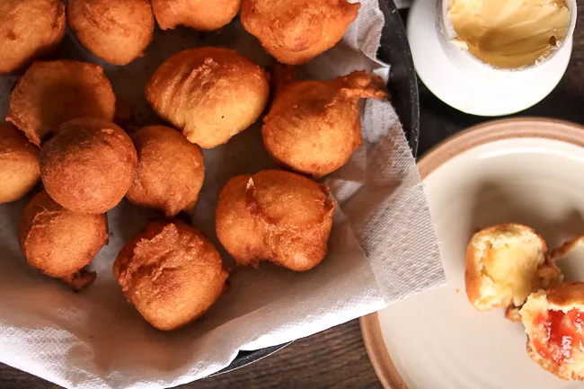

PANIKEKE

Description
They're a lot like doughnuts but in ball form lmao idk. Best eaten fresh while still hot with a blob of real butter, non of that margarine business.
Ingredients
- 3 ½ cups all-purpose flour
- 1 ⅓ cups white sugar
- 2 teaspoons baking powder
- 1 ½ cups water
- 2 medium very ripe bananas, mashed
- 1 tablespoon vanilla extract
- 1 ½ cups vegetable oil for frying, or as needed
Method
- Whisk flour, sugar, and baking powder together in a bowl until thoroughly mixed. Stir in water, bananas, and vanilla until combined; dough will be smooth and sticky.
- Heat 3 inches oil in a deep fryer to 350 degrees F (175 degrees C).
- Working in batches of four to five at a time, scoop a scant 1/4 cup batter with a large spoon, then use another spoon to gently push it off into the deep fryer. Fry until panikeke float to the top and turn golden brown, about 3 minutes per side. Drain on paper towels.
Home